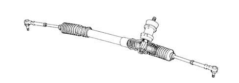

Introduction - STEERING BOX
- Path
- Descriptions > 41 STEERING UNIT > 4120 STEERING BOX > Introduction - STEERING BOX
- Kind
- system description
- Applies to
- all engines; all production periods
- Interactive page
- https://sloeber94.github.io/elrnDB-fDbl/en/#/2585409
Applies to: all engines; all production periods
The mechanical rack and pinion steering box is the traditional type and features a fixed ration of 32 mm/rev.
